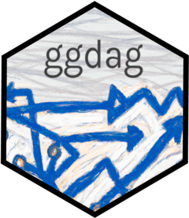

Changelog
Source:NEWS.md
ggdag (development version)
- Implemented automatic time-ordered coordinates for
time_ordered_coords()andlayout(#115) - Added
geom_dag_label()to complementgeom_dag_text()and the repel functions (#116) - Added
pull_dag()andpull_dag_data()to extract DAG components,update_dag()andupdate_dag_data()to update DAG components, andas_tidy_dagitty()to construct DAGs from data frames (#117). Thanks to @lorenzoFabbri for inspiring some of the data-to-dag code in #90.
ggdag 0.2.10
CRAN release: 2023-05-28
- Fixed bug where ggdag was using wrong
left_join()interface with dplyr 1.1.0 (#110)
ggdag 0.2.8
CRAN release: 2023-03-17
- Added new function
time_ordered_coords()for calculating time-ordered coordinates (#88) - Addressed changes requested by CRAN, other changes in tidyverse (#87, #86, #85)
ggdag 0.2.7
CRAN release: 2022-10-29
- Fixed various bugs in calculating and visualizing paths (#75)
- Fixed breaking changes from the upcoming release of ggplot2 3.4.0 (#79)
-
sizeis now deprecated forgeom_dag_collider_edges()in favor oflinewidth, related to #79.
ggdag 0.2.5
CRAN release: 2022-07-16
- Fixed issue with
dag_adjustment_sets()whenwidthoption was low by extracting adjustment sets directly (#70) - Fixed issue with
tidy_dagitty()that missed nodes with no edges attached. May cause minor breaking changes in randomized layouts. (#68) - Added the
limitargument todag_paths,ggdag_paths, andggdag_paths_fan(seedagitty::paths) (#65).
ggdag 0.2.4
CRAN release: 2021-10-10
-
tidy_dagitty()no longer allows the dendogram layout type (#62) -
scale_adjusted()now correctly aligns legend types (#61) - ggdag no longer loads ggplot2 via
Depends, instead importing it internally (#57).
ggdag 0.2.3
CRAN release: 2021-01-12
- Update vdiffr to be explicitly conditional (#51)
- Fixed bug in
activate_collider_paths()that causes an error where a collider had a high number of ancestors (#49) - Fixed bug in
node_equivalent_dags()where extra columns did not get joined to new tidy DAG (#40)
ggdag 0.2.2
CRAN release: 2020-02-13
- Added vdiffr tests, as well as a basic test file for every
.Rfile. (#27) - Updated roxygen2 version (#29)
- Fixed bugs in
dag_paths()andgeom_dag_edges_fan()(#31) - Removed use of
use_defaults()ggprotomethod inGeomDAGEdge(#33) - Use
ggplot2::expansion()instead ofexpand_scale()when ggplot2 version is at least3.3.0and removed local version ofexpand_scale()(#34)
ggdag 0.2.1
CRAN release: 2019-12-06
- Fixed bug in
ggdag_collider()where the aesthetics were flipped for the colors but not the labels (issue #15, b72e34b) - Used
as.character.default()directly for working with characters to avoid dispatch error when the formula.tools package is attached (issue #17, 0f32bb4)
ggdag 0.2.0
CRAN release: 2019-09-12
- Fixed compatibility issue with ggraph 2.0.0 by changing to
strengthparameter in curved geoms - Fixed join bug in
node_equivalent_class()that didn’t account for the way dagitty returns DAGs with no direction - Fixed join bug in
node_equivalent_class()that didn’t checktonode - Implemented
is_false()to avoid dependency on R 3.5.0 - improved edge lengths
- add
{}to adjustment set names to reflect convention - Set nodes to be unstyled by default
- Changed default themes and scales to be more like base ggplot2
- Added a
NEWS.mdfile to track changes to the package.